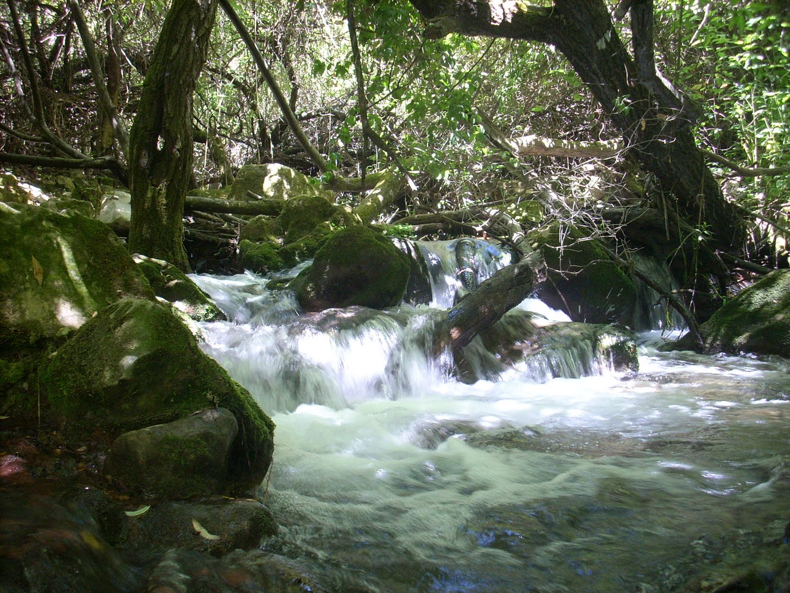

Cadis té una superfície de 13,3km2 , aquest ubicat al nord de la península ibèrica. Aquest dóna a l‘oceà, atlàntic.
El clima de Cadis és molt priviliegat, la seva mitjana de temperatura és de 18,2a, el seu clima és mediterrani amb influències atlàntiques, això dóna que les seves temperatures siguin suaus i l’escassetat de pluges.
Riu Guadalete
Riu Guadalquivir
Riu el bosc
Torreón (1654)
Cirerer (1600)
simancon (1556)
